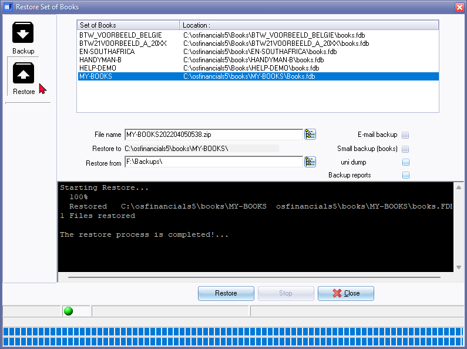

Restore a Set of Books
This option allows you to restore data for a specific Set of Books from a valid backup file located on your hard drive or in a valid folder on your system. This option also decompresses or unzips the files contained in the backup file.
To restore a Set of Books from a backup, a valid backup file (tcBackup.zip) must exist. If your data becomes corrupt for any reason, restoring from backup can fix the issue. However, you will need to re-enter all the data that was entered after the date of the last backup.
Regularly backing up your data is important as it can save a lot of work in the event of data corruption or loss. If you don't make regular backups, you may have to re-enter thousands of transactions and information related to the general ledger, debtor, creditor, and stock.
|
|
It's also important to keep a record of your backup files and label them to prevent restoring a Set of Books from an incorrect backup file. Keeping a record of which data is backed up and which is not can also prevent you from re-entering data that's already on your backup files. |

To Restore a Set of Books:
- On the Start ribbon, select Backup / Restore. If a Set of Books is open on your system, the Set of Books will automatically be closed and the Backup Set of Books screen is displayed:

- Select the Restore option. The "Backup Set of Books" screen will change to the "Restore Set of Books" screen.
- Select the Name of the Set of Books you wish to restore.
- Select the folder (drive, etc.) to Restore from.
|
|
You can also select the folder on your hard drive or network drive where your backup data is stored by browsing for a folder. To do this, click on the icon located on the right-hand side of the "Restore to" field. This will open the "Browse For Folder - Select backup target" screen. From here, select a valid folder and click on the OK button. |

- Click on the Restore button. The following confirmation message is displayed:
Restore from backup
New No
WARNING this will overwrite your current Set of Books! Are you sure you want to continue?
- If you click Yes, another confirmation message will be displayed.
This will seriously affect your Set of Books! Are you sure you want to clear this Set of Books?
- Select (tick) the "I have read this instruction and I understand the action!" The Yes and No buttons will be activated. If you click on the No button, the process will be cancelled. Click on the Yes button, if you are absolutely sure. The following information message will be displayed.
Your Set of Books will be restored in:
C:\osfinancials\books\MY-BOOKS\
Do you wish to continue?
- If you click on the No button, the process will be cancelled. Click on the Yes button, the restore process will be started. When the restore process is completed, an information message will be displayed.
The Restore process is completed!
|
|
If the "Small backup (books)" option was not selected on the "Backup Set of Books" screen, any images that are linked to Groups and Stock items will also be included in the backup file and will be restored when the backup is restored. |
- Click on the OK button and click on the Close button on the "Backup Set of Books" screen.
|
|
You may also press the Esc key on your keyboard to exit the Backup Set of Books screen. |
|
|
Should a backup file not exist in the selected directory, an error message will be displayed: Backup file not found in Click OK and select the correct backup file in zip format. |